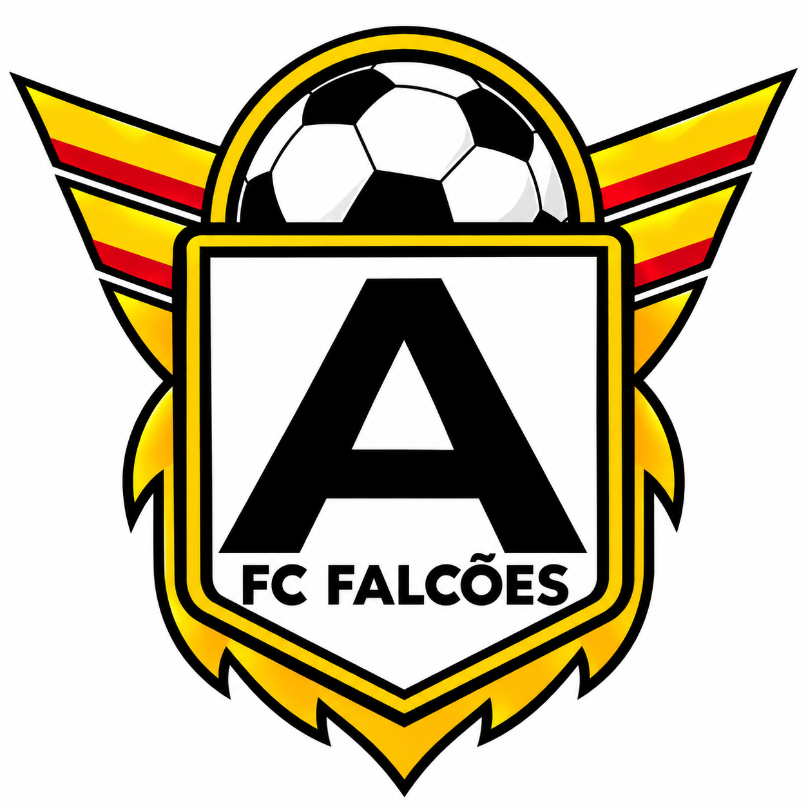
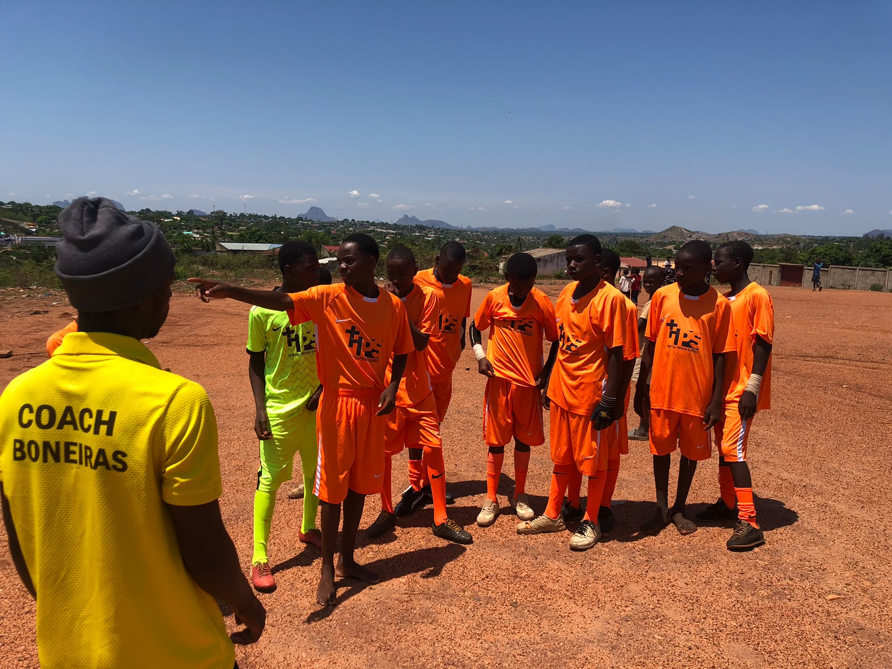
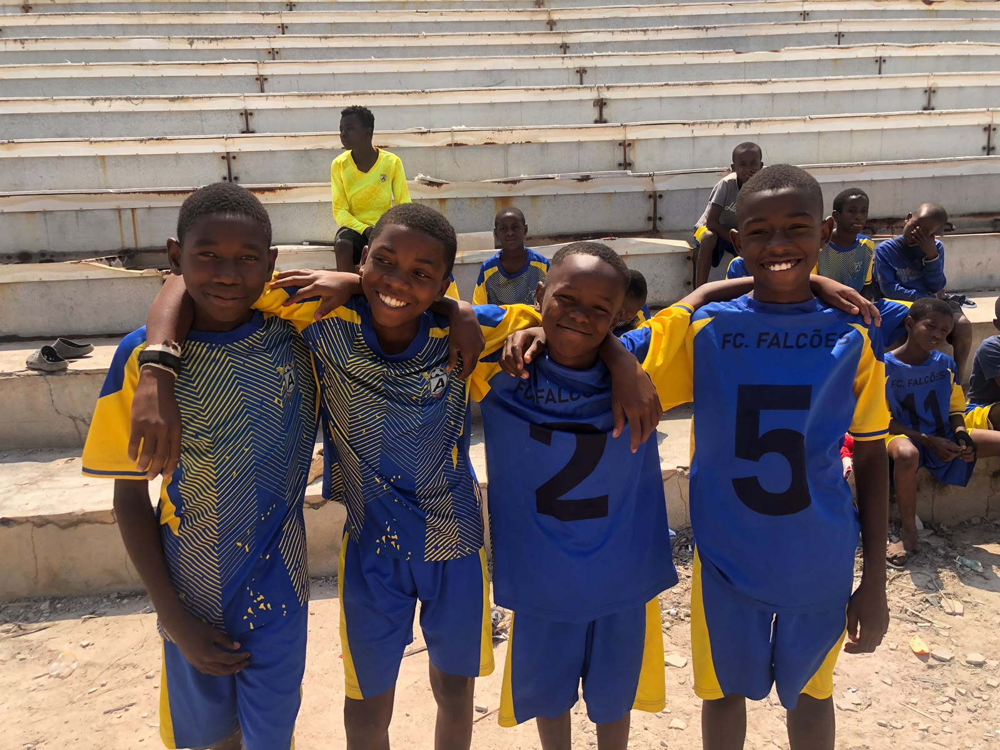
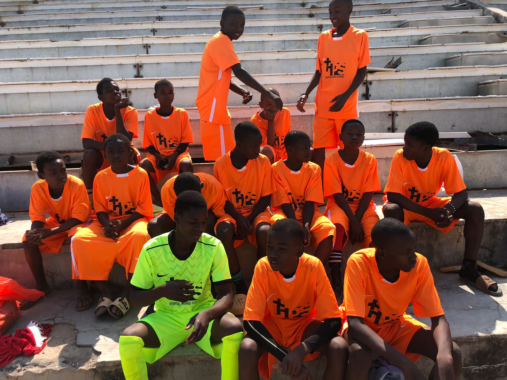
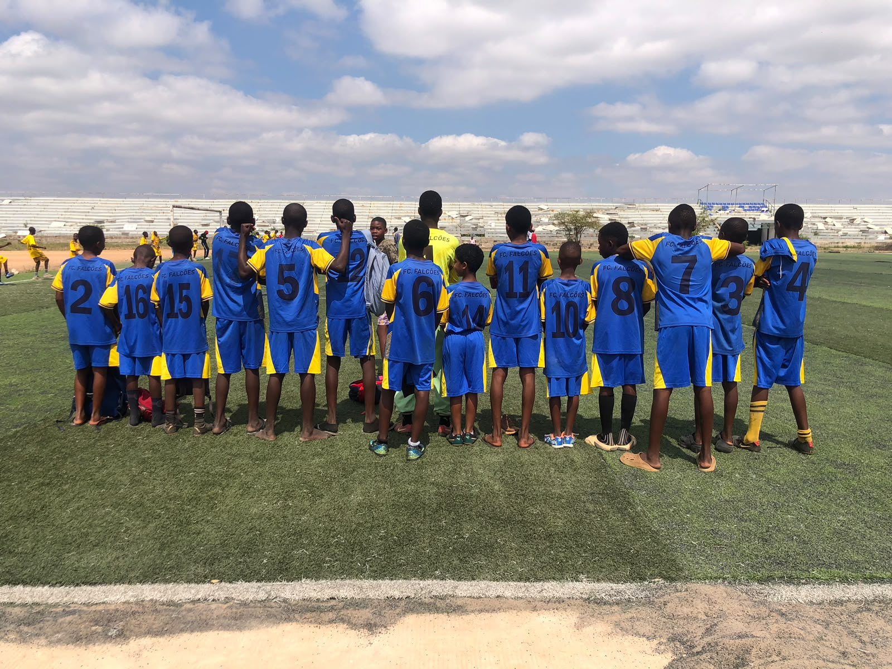
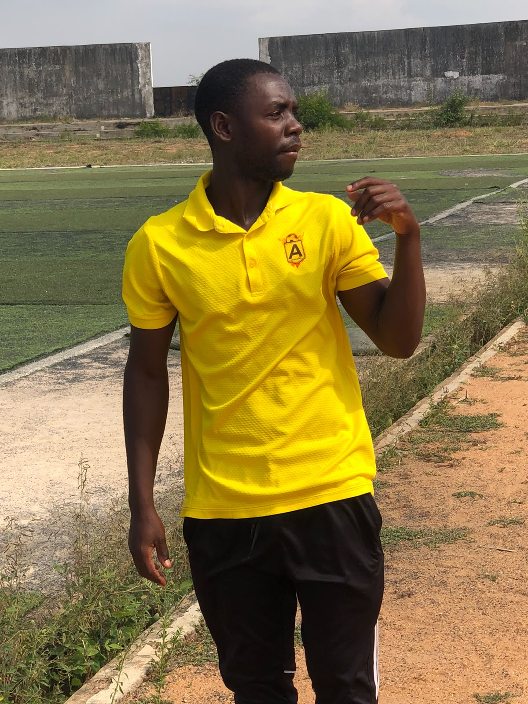
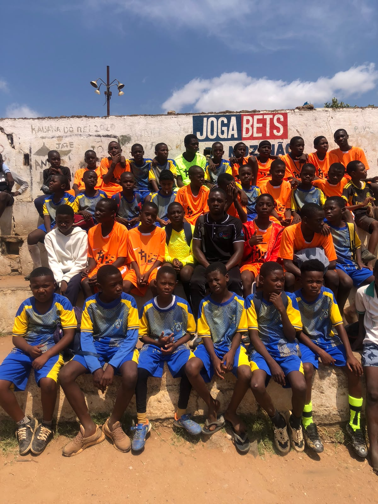
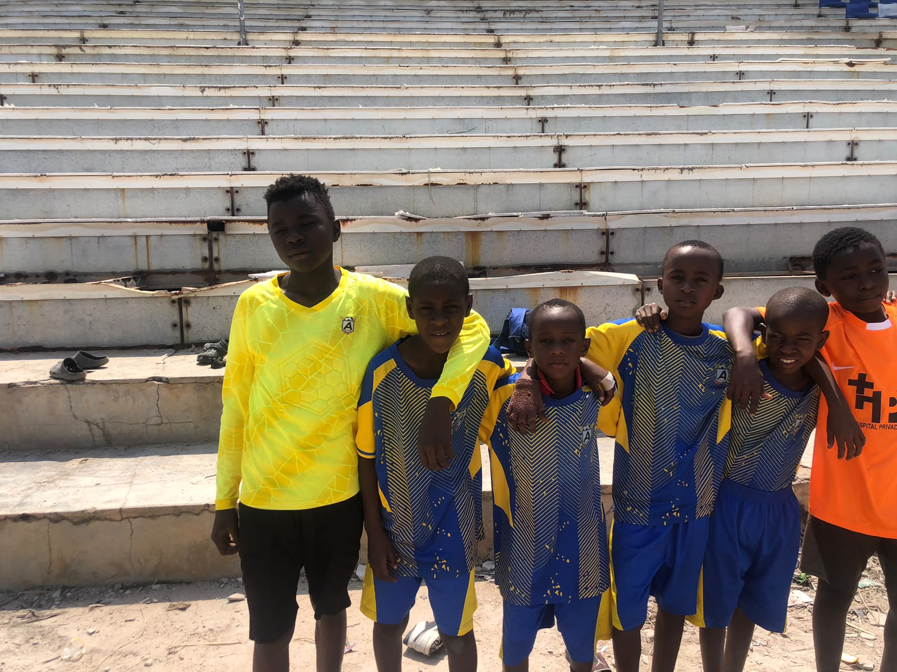
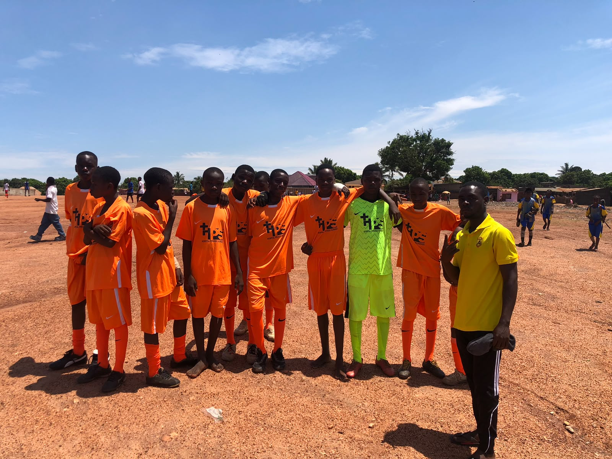
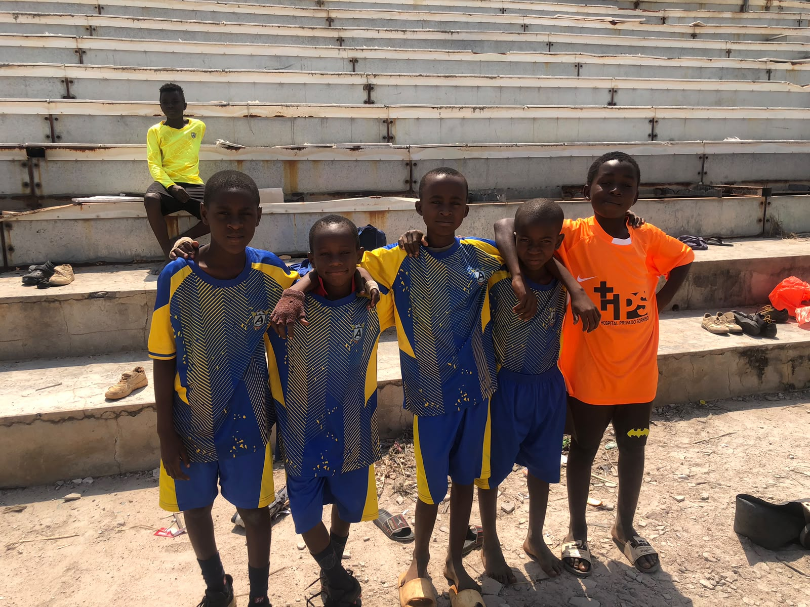

FAIXA ETÁRIA
Formação para jovens dos 6 aos 17 anos.

FC FALCÕESFORMAR • COMPETIR • VENCERPAIXÃO • DISCIPLINA • FUTURO
Escola de formação de futebol em Nampula, dedicada ao desenvolvimento de jovens atletas dos 6 aos 17 anos.
Formação para jovens dos 6 aos 17 anos.
Nampula, Moçambique.
Futebol, disciplina, respeito e espírito de equipa.
O FC Falcões acredita no poder do desporto para desenvolver talento, carácter e sentido de comunidade.
Com trabalho, disciplina e espírito de união, procuramos criar oportunidades para jovens jogadores crescerem dentro e fora do campo.
FALE CONNOSCO ↗Desenvolver capacidades técnicas e humanas.
Trabalhar com compromisso e responsabilidade.
Crescer como equipa, respeitando cada pessoa.

A NOSSA IDENTIDADE
Cada treino é mais um passo. Cada jogador faz parte da nossa história.
Uma equipa construída com dedicação, amizade e vontade de evoluir.
 ORGULHO FALCÕES
ORGULHO FALCÕES
 ORGULHO FALCÕES
ORGULHO FALCÕES
 ORGULHO FALCÕES
ORGULHO FALCÕES

EQUIPAMENTO PRINCIPAL
EQUIPAMENTO ALTERNATIVO
ORGULHO FALCÕESA lista nominal do plantel, números e posições será adicionada quando os dados dos jogadores forem disponibilizados.

03 / LIDERANÇA
O trabalho começa no treino: orientar os jogadores, fortalecer a confiança e construir uma equipa unida.
COMISSÃO TÉCNICA FC FALCÕESAlguns momentos da caminhada dos Falcões.




05 / JUNTA-TE A NÓS
Queres conhecer a escola, saber sobre os treinos ou apoiar o projecto? Entra em contacto com o FC Falcões.
Localização: Nampula, Moçambique
Idades: 6 aos 17 anos
Fale connosco por telefone ou WhatsApp:
+258 87 350 9588WhatsApp — 87 350 9588 ↗+258 83 519 7716WhatsApp — 83 519 7716 ↗